The ancestral (streptomycin sensitive) and evolved (streptomycin resistant) forms of HAMBI_1287 and HAMBI_1977 were grown on adjacent 0.22 um membrane-separated wells in a Verasys co-culture plate. Note that due to the unique format of the plate rows A and H do not contain any data. Measurements were collected with a Biotek Logphase 600 microplate reader.
Show/hide code
##### Librarieslibrary(here)library(tidyverse)library(readxl)library(stringr)library(lubridate)library(fs)library(ggforce)library(slider)source(here::here("R", "utils_gcurves.R"))##### Global varsdata_raw <- here::here("_data_raw", "coculture_plate")data <- here::here("data", "coculture_plate")# make processed data directory if it doesn't existfs::dir_create(data)
1 Read and Tidy
1.1 Batch 01
Show/hide code
batch <-"20250920_batch01"#### Read sample metadatasamplesheet_diff_test <- readxl::read_xlsx(here::here(data_raw, batch, "diffusion_test_2_samplesheet.xlsx"))samplesheet_coculture <- readxl::read_xlsx(here::here(data_raw, batch, "coculture_samplesheet.xlsx"))##### Read crowth curves# Diffusion test plate01plate01 <-read_logphase_xlsx(batch, "diffusion_test_2_Co-culture_1977_1287AE_12.9_15-syys-2025 09-00-26.xlsx", 2, 1) %>%# remove rows A and Hfilter(str_detect(well, "^A|^H", negate =TRUE)) %>%left_join(samplesheet_diff_test, by =join_by(well)) %>%mutate(plate_name ="plate01")# Experiment plate02 - 0 ug/ml streptomycinplate02 <-read_logphase_xlsx(batch, "Co-culture_0_4_8ug_plates_22-syys-2025 08-17-10.xlsx", 2, 1) %>%# rows A and H not collected here so they are NAdrop_na() %>%left_join(samplesheet_coculture, by =join_by(well)) %>%mutate(streptomycin =0) %>%mutate(plate_name ="plate02")# Experiment plate03 - 4 ug/ml streptomycinplate03 <-read_logphase_xlsx(batch, "Co-culture_0_4_8ug_plates_22-syys-2025 08-17-10.xlsx", 5, 1) %>%# rows A and H not collected here so they are NAdrop_na() %>%left_join(samplesheet_coculture, by =join_by(well)) %>%mutate(streptomycin =4) %>%mutate(plate_name ="plate03")# Experiment plate04 - 8 ug/ml streptomycinplate04 <-read_logphase_xlsx(batch, "Co-culture_0_4_8ug_plates_22-syys-2025 08-17-10.xlsx", 8, 1) %>%# rows A and H not collected here so they are NAdrop_na() %>%left_join(samplesheet_coculture, by =join_by(well)) %>%mutate(streptomycin =8) %>%mutate(plate_name ="plate04")
1.2 Batch 02
Show/hide code
batch <-"20250925_batch02"#### Read sample metadatasamplesheet_coculture <- readxl::read_xlsx(here::here(data_raw, batch, "coculture_samplesheet.xlsx"))##### Read crowth curves# Experiment plate05 - 12 ug/ml streptomycinplate05 <-read_logphase_xlsx(batch, "Co-culture_12_16_24_ug_plates_25-syys-2025 13-42-42.xlsx", 2, 1) %>%# rows A and H not collected here so they are NAdrop_na() %>%left_join(samplesheet_coculture, by =join_by(well)) %>%mutate(streptomycin =12) %>%mutate(plate_name ="plate05")# Experiment plate06 = 16 ug/ml streptomycinplate06 <-read_logphase_xlsx(batch, "Co-culture_12_16_24_ug_plates_25-syys-2025 13-42-42.xlsx", 5, 1) %>%# rows A and H not collected here so they are NAdrop_na() %>%left_join(samplesheet_coculture, by =join_by(well)) %>%mutate(streptomycin =16) %>%mutate(plate_name ="plate06")# Experiment plate07 - 24 ug/ml streptomycinplate07 <-read_logphase_xlsx(batch, "Co-culture_12_16_24_ug_plates_25-syys-2025 13-42-42.xlsx", 8, 1) %>%# rows A and H not collected here so they are NAdrop_na() %>%left_join(samplesheet_coculture, by =join_by(well)) %>%mutate(streptomycin =24) %>%mutate(plate_name ="plate07")
1.3 Batch 03
Show/hide code
batch <-"20251006_batch03"##### Read growth curves# Experiment plate08plate08 <-read_logphase_xlsx(batch, "coculture_plates_8_9_10_11_06-10-2025.xlsx", 2, 1) %>%# rows A and H not collected here so they are NAdrop_na() %>%left_join(readxl::read_xlsx(here::here(data_raw, batch, "coculture_samplesheet_plate08.xlsx")), by =join_by(well)) %>%mutate(plate_name ="plate08")# Experiment plate09plate09 <-read_logphase_xlsx(batch, "coculture_plates_8_9_10_11_06-10-2025.xlsx", 5, 1) %>%# rows A and H not collected here so they are NAdrop_na() %>%left_join(readxl::read_xlsx(here::here(data_raw, batch, "coculture_samplesheet_plate09.xlsx")), by =join_by(well)) %>%mutate(plate_name ="plate09")# Experiment plate10plate10 <-read_logphase_xlsx(batch, "coculture_plates_8_9_10_11_06-10-2025.xlsx", 8, 1) %>%# rows A and H not collected here so they are NAdrop_na() %>%left_join(readxl::read_xlsx(here::here(data_raw, batch, "coculture_samplesheet_plate10.xlsx")), by =join_by(well)) %>%mutate(plate_name ="plate10")# Experiment plate11plate11 <-read_logphase_xlsx(batch, "coculture_plates_8_9_10_11_06-10-2025.xlsx", 11, 1) %>%# rows A and H not collected here so they are NAdrop_na() %>%left_join(readxl::read_xlsx(here::here(data_raw, batch, "coculture_samplesheet_plate11.xlsx")), by =join_by(well)) %>%mutate(plate_name ="plate11")
# save result for later readr::write_tsv(coculture_gcurves_sm, here::here(data, "coculture_gcurves_smooth.tsv"))
2 Inspect growth curves
2.1 plate01 (diffusion test)
This plate contains three replicates for the ancestral form of HAMBI_1287
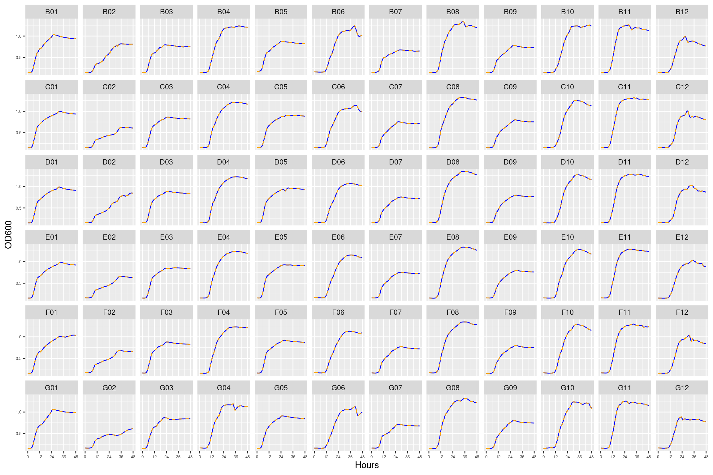
Figure 1: Growth curves for the “diffusion test” coculture plate. Columns 1, 3, 5, and 7 have only M9 salts. Columns 2, 4, 6, 8, 9, 10, 11, and 12 had R2A medium. Column \(n=\{1\dots11\}\) is connected to column \(n+1\) with a 0.22 um membrane allowing free diffusion of resources and metabolic byproducts but not cells. Bacteria were inoculated into rows B-D, columns 1, 3, 5, and 7 and rows E-F columsn 2, 4, 6, and 8. Columns 9 and 11 were not inoculated with any bacteria. X-axis is time in hours (48 hour incubation). Y axis is the absorbance scaled for each well. Blue line is smoothed with a moving average window of 9 points. Orange is non-smoothed. Note that rows A and H are meaningless because of the construction of the plate. Note: rows A and H are blank.
2.2 plate02 (0 ug/ml Strep)
Figure 2: Growth curves for the coculture plate with no streptomycin. Column \(n=\{1\dots11\}\) is connected to column \(n+1\) with a 0.22 um membrane allowing free diffusion of resources and metabolic byproducts but not cells. X-axis is time in hours (48 hour incubation). Y axis is the absorbance scaled for each well. Blue line is smoothed with a moving average window of 9 points. Orange is non-smoothed. Note that rows A and H are meaningless because of the construction of the plate. Note: rows A and H are blank.
2.3 plate03 (4 ug/ml Strep)
Figure 3: Growth curves for the coculture plate with 4 ug/ml streptomycin. Column \(n=\{1\dots11\}\) is connected to column \(n+1\) with a 0.22 um membrane allowing free diffusion of resources and metabolic byproducts but not cells. X-axis is time in hours (48 hour incubation). Y axis is the absorbance scaled for each well. Blue line is smoothed with a moving average window of 9 points. Orange is non-smoothed. Note that rows A and H are meaningless because of the construction of the plate. Note: rows A and H are blank.
2.4 plate04 (8 ug/ml Strep)
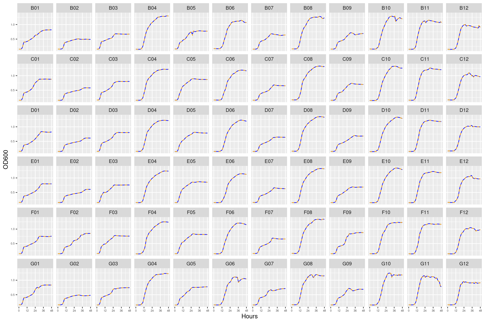
Figure 4: Growth curves for the coculture plate with 8 ug/ml streptomycin. Column \(n=\{1\dots11\}\) is connected to column \(n+1\) with a 0.22 um membrane allowing free diffusion of resources and metabolic byproducts but not cells. X-axis is time in hours (48 hour incubation). Y axis is the absorbance scaled for each well. Blue line is smoothed with a moving average window of 9 points. Orange is non-smoothed. Note that rows A and H are meaningless because of the construction of the plate. Note: rows A and H are blank.
2.5 plate05 (12 ug/ml Strep)
E04 before 36 hours
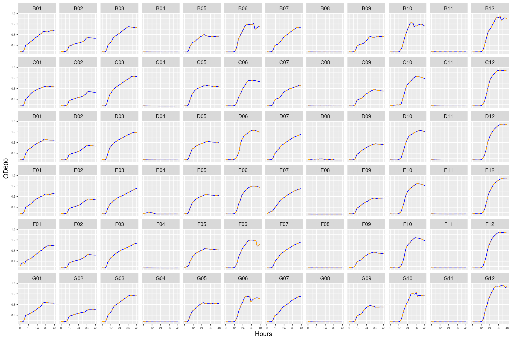
Figure 5: Growth curves for the coculture plate with 12 ug/ml streptomycin. Column \(n=\{1\dots11\}\) is connected to column \(n+1\) with a 0.22 um membrane allowing free diffusion of resources and metabolic byproducts but not cells. X-axis is time in hours (48 hour incubation). Y axis is the absorbance scaled for each well. Blue line is smoothed with a moving average window of 9 points. Orange is non-smoothed. Note that rows A and H are meaningless because of the construction of the plate. Note: rows A and H are blank.
2.6 plate06 (16 ug/ml Strep)
Figure 6: Growth curves for the coculture plate with 16 ug/ml streptomycin. Column \(n=\{1\dots11\}\) is connected to column \(n+1\) with a 0.22 um membrane allowing free diffusion of resources and metabolic byproducts but not cells. X-axis is time in hours (48 hour incubation). Y axis is the absorbance scaled for each well. Blue line is smoothed with a moving average window of 9 points. Orange is non-smoothed. Note that rows A and H are meaningless because of the construction of the plate. Note: rows A and H are blank.
2.7 plate07 (24 ug/ml Strep)
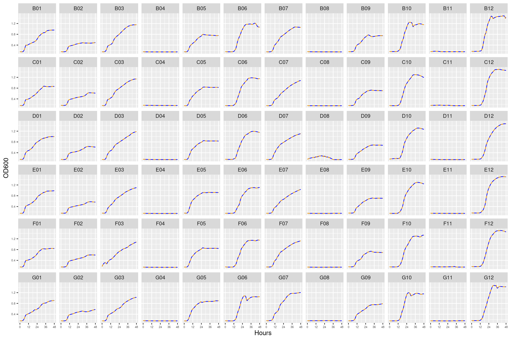
Figure 7: Growth curves for the coculture plate with 24 ug/ml streptomycin. Column \(n=\{1\dots11\}\) is connected to column \(n+1\) with a 0.22 um membrane allowing free diffusion of resources and metabolic byproducts but not cells. X-axis is time in hours (48 hour incubation). Y axis is the absorbance scaled for each well. Blue line is smoothed with a moving average window of 9 points. Orange is non-smoothed. Note that rows A and H are meaningless because of the construction of the plate. Note: rows A and H are blank.
2.8 plate08 monocultures at 0, 4, 8 strep
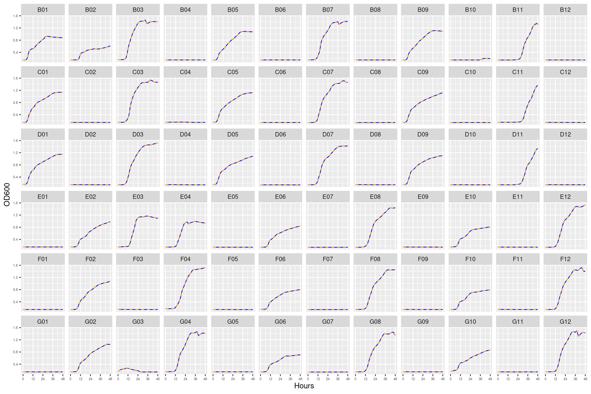
Figure 8: Growth curves for the monoculture plate with 0, 4, and 8 ug/ml streptomycin. Column \(n=\{1\dots11\}\) is connected to column \(n+1\) with a 0.22 um membrane allowing free diffusion of resources and metabolic byproducts but not cells. X-axis is time in hours (48 hour incubation). Y axis is the absorbance scaled for each well. Blue line is smoothed with a moving average window of 9 points. Orange is non-smoothed. Note that rows A and H are meaningless because of the construction of the plate. Note: rows A and H are blank.
2.9 plate09 monocultures at 12, 16, 24 strep
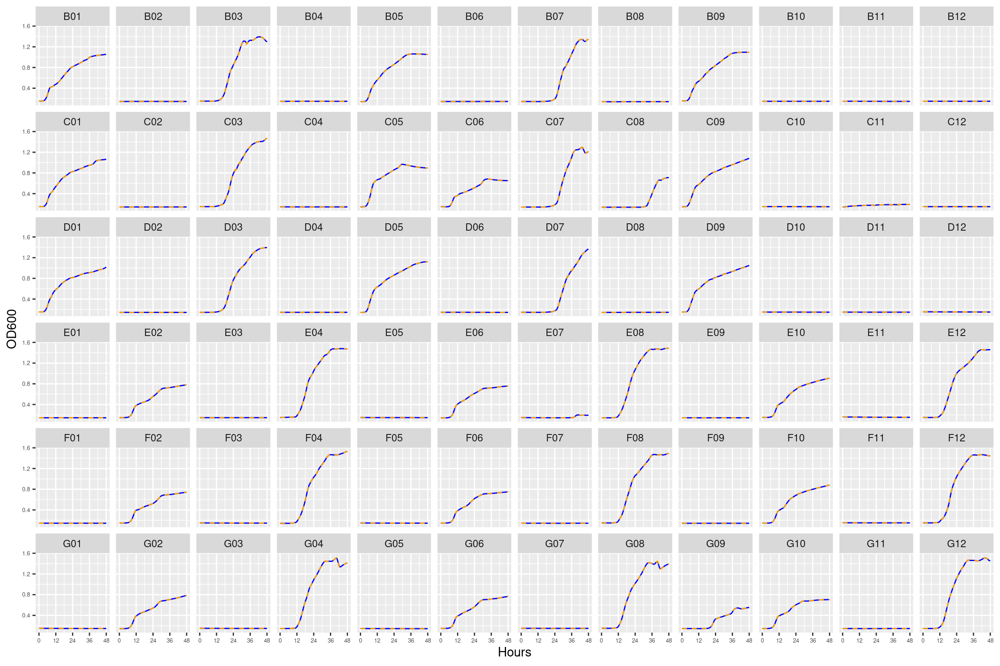
Figure 9: Growth curves for the monoculture plate with 12, 16, and 24 ug/ml streptomycin. Column \(n=\{1\dots11\}\) is connected to column \(n+1\) with a 0.22 um membrane allowing free diffusion of resources and metabolic byproducts but not cells. X-axis is time in hours (48 hour incubation). Y axis is the absorbance scaled for each well. Blue line is smoothed with a moving average window of 9 points. Orange is non-smoothed. Note that rows A and H are meaningless because of the construction of the plate. Note: rows A and H are blank.
2.10 plate10 cocultures at 64 + 256 strep
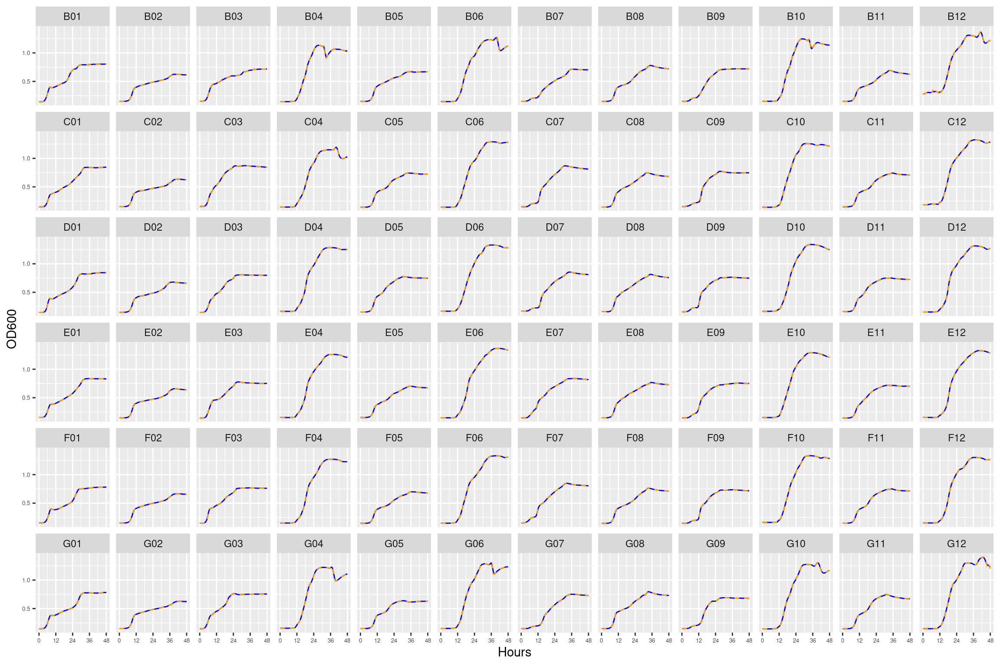
Figure 10: Growth curves for the coculture plate with 64 and 256 ug/ml streptomycin. Column \(n=\{1\dots11\}\) is connected to column \(n+1\) with a 0.22 um membrane allowing free diffusion of resources and metabolic byproducts but not cells. X-axis is time in hours (48 hour incubation). Y axis is the absorbance scaled for each well. Blue line is smoothed with a moving average window of 9 points. Orange is non-smoothed. Note that rows A and H are meaningless because of the construction of the plate. Note: rows A and H are blank.
2.11 plate11 cocultures at 1028 + 4096 and monocultures at 64 + 256
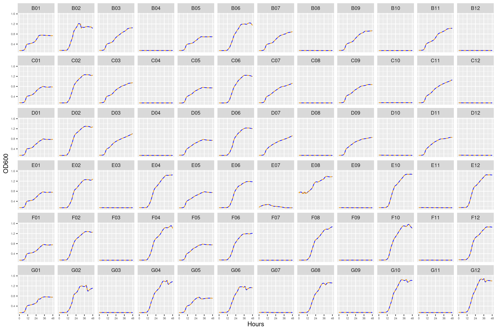
Figure 11: Growth curves for the coculture plate with 1028 + 4096 ug/ml streptomycin with monocultures at 64 and 256 ug/ml streptomycin. Column \(n=\{1\dots11\}\) is connected to column \(n+1\) with a 0.22 um membrane allowing free diffusion of resources and metabolic byproducts but not cells. X-axis is time in hours (48 hour incubation). Y axis is the absorbance scaled for each well. Blue line is smoothed with a moving average window of 9 points. Orange is non-smoothed. Note that rows A and H are meaningless because of the construction of the plate. Note: rows A and H are blank.
coculture_gcurves_sm <- coculture_gcurves_sm %>%# make uniq idmutate(id =paste0(plate_name, "|", well))
3.1 Spline based estiamte
Smoothing splines are a quick method to estimate maximum growth. The method is called nonparametric, because the growth rate is directly estimated from the smoothed data without being restricted to a specific model formula.
The method was inspired by an algorithm of Kahm et al. (2010), with different settings and assumptions. In the moment, spline fitting is always done with log-transformed data, assuming exponential growth at the time point of the maximum of the first derivative of the spline fit. All the hard work is done by function smooth.spline from package stats, that is highly user configurable. Normally, smoothness is automatically determined via cross-validation. This works well in many cases, whereas manual adjustment is required otherwise, e.g. by setting spar to a fixed value [0, 1] that also disables cross-validation.
many_spline_xy <- purrr::map(many_spline@fits, \(x) data.frame(x = x@xy[1], y = x@xy[2])) %>% purrr::list_rbind(names_to ="id") many_spline_fitted <- purrr::map(many_spline@fits, \(x) data.frame(x@FUN(x@obs$time, x@par))) %>% purrr::list_rbind(names_to ="id") %>% dplyr::rename(hours = time, predicted = y) %>% dplyr::left_join(coculture_gcurves_sm, by = dplyr::join_by(id, hours)) %>% dplyr::group_by(id) %>%# this step makes sure we don't plot fits that go outside the range of the data dplyr::mutate(predicted = dplyr::if_else(dplyr::between(predicted, min(OD600_rollmean), max(OD600_rollmean)), predicted, NA_real_)) %>% dplyr::ungroup()
3.1.4 Plot
3.1.4.1 plate01 (diffusion test)
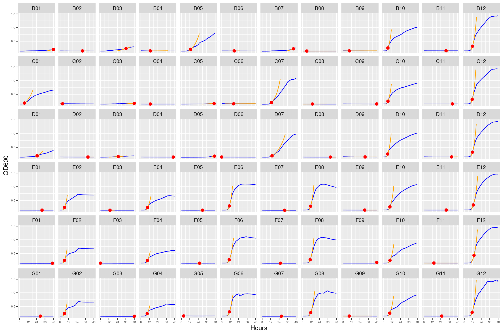
Figure 12: As in Figure 1. Blue line is smoothed with a moving average window of 5 points. Orange is slope of max predicted growth rate from the first derivative of a smoothing spline. Red dot is hours and OD600 at which maximum growth rate is reached.
3.1.4.2 plate02 (0 ug/ml Strep)
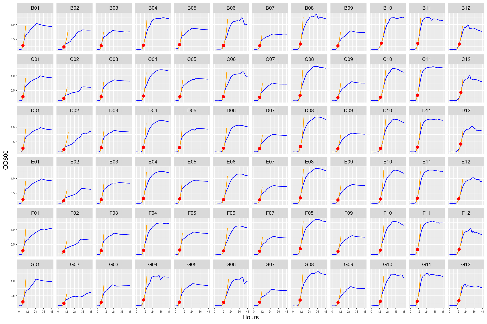
Figure 13: As in Figure 2. Blue line is smoothed with a moving average window of 5 points. Orange is slope of max predicted growth rate from the first derivative of a smoothing spline. Red dot is hours and OD600 at which maximum growth rate is reached.
3.1.4.3 plate03 (4 ug/ml Strep)
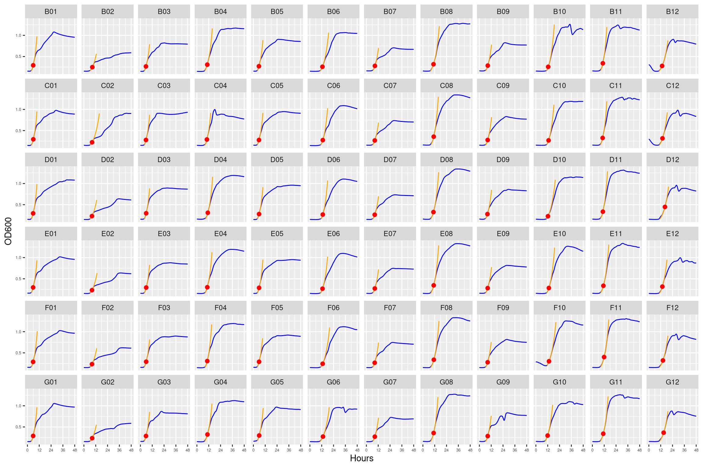
Figure 14: As in Figure 3. Blue line is smoothed with a moving average window of 5 points. Orange is slope of max predicted growth rate from the first derivative of a smoothing spline. Red dot is hours and OD600 at which maximum growth rate is reached.
3.1.4.4 plate04 (8 ug/ml Strep)
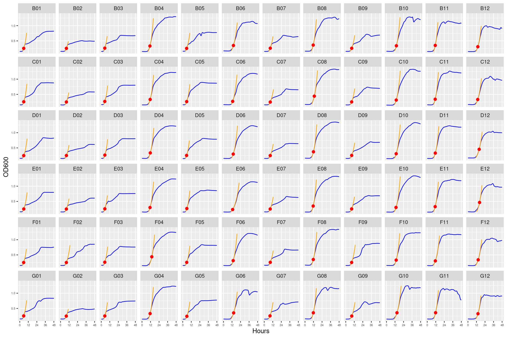
Figure 15: As in Figure 4. Blue line is smoothed with a moving average window of 5 points. Orange is slope of max predicted growth rate from the first derivative of a smoothing spline. Red dot is hours and OD600 at which maximum growth rate is reached.
3.1.4.5 plate05 (12 ug/ml Strep)
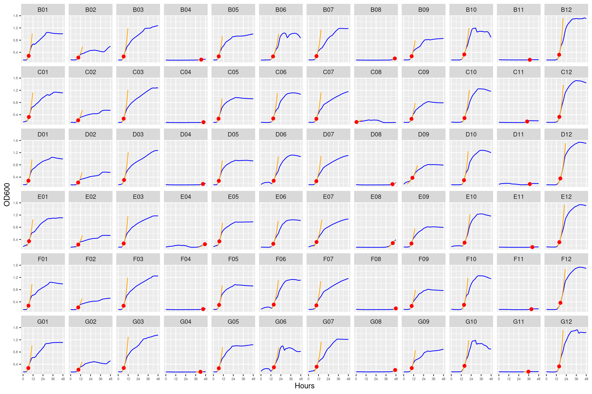
Figure 16: As in Figure 5. Blue line is smoothed with a moving average window of 5 points. Orange is slope of max predicted growth rate from the first derivative of a smoothing spline. Red dot is hours and OD600 at which maximum growth rate is reached.
3.1.4.6 plate06 (16 ug/ml Strep)
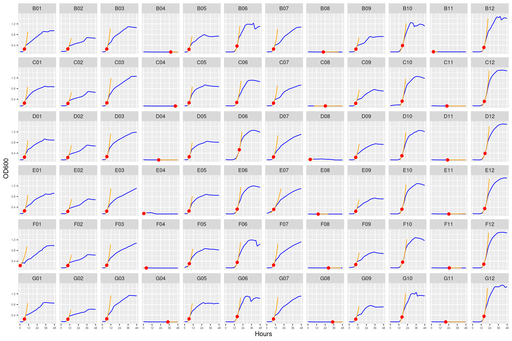
Figure 17: As in Figure 6. Blue line is smoothed with a moving average window of 5 points. Orange is slope of max predicted growth rate from the first derivative of a smoothing spline. Red dot is hours and OD600 at which maximum growth rate is reached.
3.1.4.7 plate07 (24 ug/ml Strep)
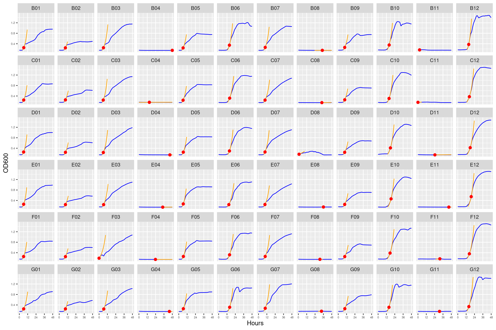
Figure 18: As in Figure 7. Blue line is smoothed with a moving average window of 5 points. Orange is slope of max predicted growth rate from the first derivative of a smoothing spline. Red dot is hours and OD600 at which maximum growth rate is reached.
3.1.4.8 plate08 monocultures at 0, 4, 8 strep
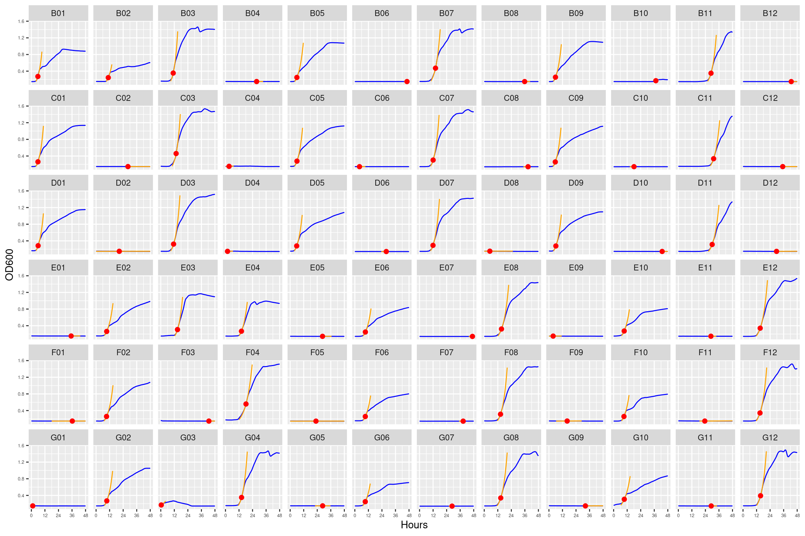
Figure 19: As in Figure 8. Blue line is smoothed with a moving average window of 5 points. Orange is slope of max predicted growth rate from the first derivative of a smoothing spline. Red dot is hours and OD600 at which maximum growth rate is reached.
3.1.4.9 plate09 monocultures at 12, 16, 24 strep
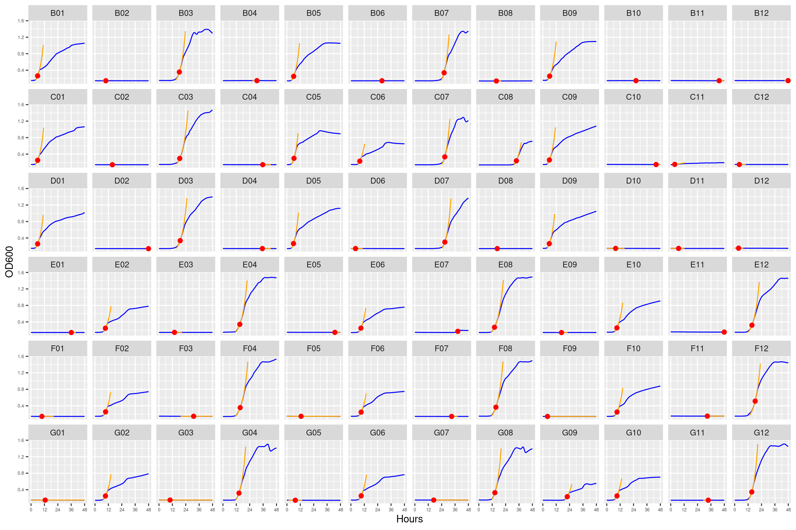
Figure 20: As in Figure 9. Blue line is smoothed with a moving average window of 5 points. Orange is slope of max predicted growth rate from the first derivative of a smoothing spline. Red dot is hours and OD600 at which maximum growth rate is reached.
3.1.4.10 plate10 cocultures at 64 + 256 strep
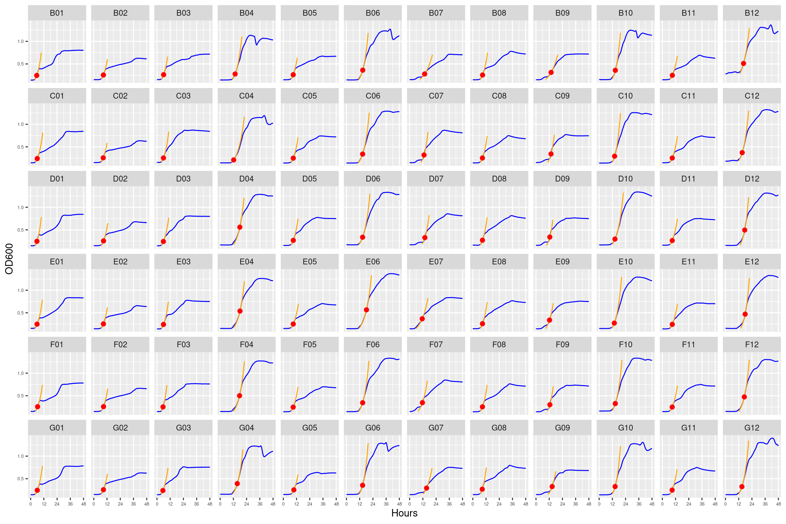
Figure 21: As in Figure 10. Blue line is smoothed with a moving average window of 5 points. Orange is slope of max predicted growth rate from the first derivative of a smoothing spline. Red dot is hours and OD600 at which maximum growth rate is reached.
3.1.4.11 plate11 cocultures at 1028 + 4096 and monocultures at 64 + 256
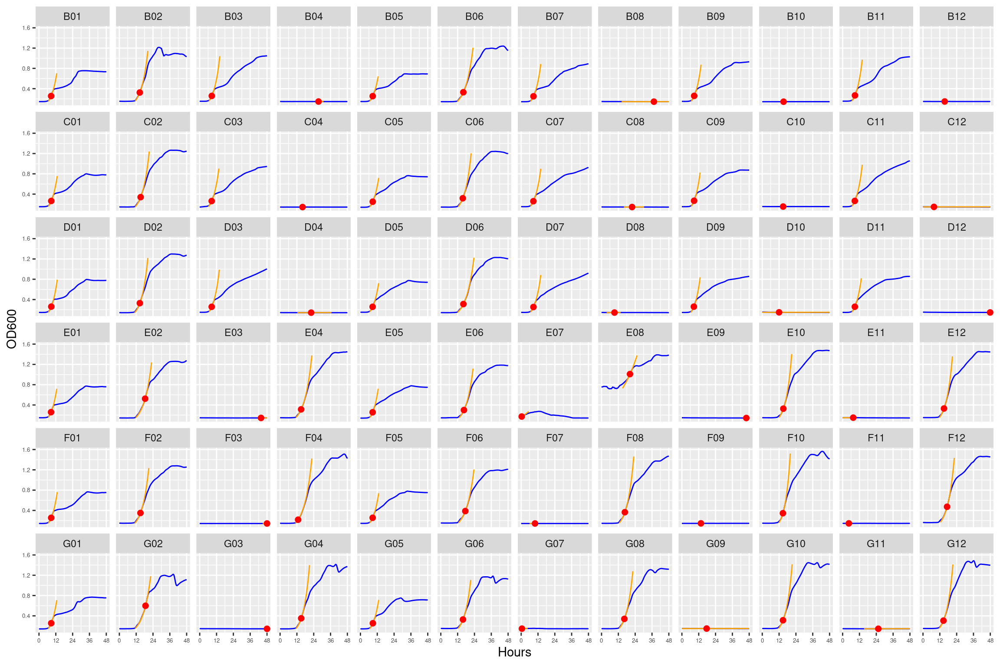
Figure 22: As in Figure 11. Blue line is smoothed with a moving average window of 5 points. Orange is slope of max predicted growth rate from the first derivative of a smoothing spline. Red dot is hours and OD600 at which maximum growth rate is reached.
---title: "Formatting co-culture growth curves from Logphase 600 Plate reader"author: "Shane Hogle"date: todaylink-citations: trueabstract: "The ancestral (streptomycin sensitive) and evolved (streptomycin resistant) forms of HAMBI_1287 and HAMBI_1977 were grown on adjacent 0.22 um membrane-separated wells in a Verasys co-culture plate. Note that due to the unique format of the plate rows A and H do not contain any data. Measurements were collected with a Biotek Logphase 600 microplate reader."---```{r}#| output: false#| warning: false#| error: false##### Librarieslibrary(here)library(tidyverse)library(readxl)library(stringr)library(lubridate)library(fs)library(ggforce)library(slider)source(here::here("R", "utils_gcurves.R"))##### Global varsdata_raw <- here::here("_data_raw", "coculture_plate")data <- here::here("data", "coculture_plate")# make processed data directory if it doesn't existfs::dir_create(data)```# Read and Tidy## Batch 01```{r}batch <-"20250920_batch01"#### Read sample metadatasamplesheet_diff_test <- readxl::read_xlsx(here::here(data_raw, batch, "diffusion_test_2_samplesheet.xlsx"))samplesheet_coculture <- readxl::read_xlsx(here::here(data_raw, batch, "coculture_samplesheet.xlsx"))##### Read crowth curves# Diffusion test plate01plate01 <-read_logphase_xlsx(batch, "diffusion_test_2_Co-culture_1977_1287AE_12.9_15-syys-2025 09-00-26.xlsx", 2, 1) %>%# remove rows A and Hfilter(str_detect(well, "^A|^H", negate =TRUE)) %>%left_join(samplesheet_diff_test, by =join_by(well)) %>%mutate(plate_name ="plate01")# Experiment plate02 - 0 ug/ml streptomycinplate02 <-read_logphase_xlsx(batch, "Co-culture_0_4_8ug_plates_22-syys-2025 08-17-10.xlsx", 2, 1) %>%# rows A and H not collected here so they are NAdrop_na() %>%left_join(samplesheet_coculture, by =join_by(well)) %>%mutate(streptomycin =0) %>%mutate(plate_name ="plate02")# Experiment plate03 - 4 ug/ml streptomycinplate03 <-read_logphase_xlsx(batch, "Co-culture_0_4_8ug_plates_22-syys-2025 08-17-10.xlsx", 5, 1) %>%# rows A and H not collected here so they are NAdrop_na() %>%left_join(samplesheet_coculture, by =join_by(well)) %>%mutate(streptomycin =4) %>%mutate(plate_name ="plate03")# Experiment plate04 - 8 ug/ml streptomycinplate04 <-read_logphase_xlsx(batch, "Co-culture_0_4_8ug_plates_22-syys-2025 08-17-10.xlsx", 8, 1) %>%# rows A and H not collected here so they are NAdrop_na() %>%left_join(samplesheet_coculture, by =join_by(well)) %>%mutate(streptomycin =8) %>%mutate(plate_name ="plate04")```## Batch 02```{r}batch <-"20250925_batch02"#### Read sample metadatasamplesheet_coculture <- readxl::read_xlsx(here::here(data_raw, batch, "coculture_samplesheet.xlsx"))##### Read crowth curves# Experiment plate05 - 12 ug/ml streptomycinplate05 <-read_logphase_xlsx(batch, "Co-culture_12_16_24_ug_plates_25-syys-2025 13-42-42.xlsx", 2, 1) %>%# rows A and H not collected here so they are NAdrop_na() %>%left_join(samplesheet_coculture, by =join_by(well)) %>%mutate(streptomycin =12) %>%mutate(plate_name ="plate05")# Experiment plate06 = 16 ug/ml streptomycinplate06 <-read_logphase_xlsx(batch, "Co-culture_12_16_24_ug_plates_25-syys-2025 13-42-42.xlsx", 5, 1) %>%# rows A and H not collected here so they are NAdrop_na() %>%left_join(samplesheet_coculture, by =join_by(well)) %>%mutate(streptomycin =16) %>%mutate(plate_name ="plate06")# Experiment plate07 - 24 ug/ml streptomycinplate07 <-read_logphase_xlsx(batch, "Co-culture_12_16_24_ug_plates_25-syys-2025 13-42-42.xlsx", 8, 1) %>%# rows A and H not collected here so they are NAdrop_na() %>%left_join(samplesheet_coculture, by =join_by(well)) %>%mutate(streptomycin =24) %>%mutate(plate_name ="plate07")```## Batch 03```{r}batch <-"20251006_batch03"##### Read growth curves# Experiment plate08plate08 <-read_logphase_xlsx(batch, "coculture_plates_8_9_10_11_06-10-2025.xlsx", 2, 1) %>%# rows A and H not collected here so they are NAdrop_na() %>%left_join(readxl::read_xlsx(here::here(data_raw, batch, "coculture_samplesheet_plate08.xlsx")), by =join_by(well)) %>%mutate(plate_name ="plate08")# Experiment plate09plate09 <-read_logphase_xlsx(batch, "coculture_plates_8_9_10_11_06-10-2025.xlsx", 5, 1) %>%# rows A and H not collected here so they are NAdrop_na() %>%left_join(readxl::read_xlsx(here::here(data_raw, batch, "coculture_samplesheet_plate09.xlsx")), by =join_by(well)) %>%mutate(plate_name ="plate09")# Experiment plate10plate10 <-read_logphase_xlsx(batch, "coculture_plates_8_9_10_11_06-10-2025.xlsx", 8, 1) %>%# rows A and H not collected here so they are NAdrop_na() %>%left_join(readxl::read_xlsx(here::here(data_raw, batch, "coculture_samplesheet_plate10.xlsx")), by =join_by(well)) %>%mutate(plate_name ="plate10")# Experiment plate11plate11 <-read_logphase_xlsx(batch, "coculture_plates_8_9_10_11_06-10-2025.xlsx", 11, 1) %>%# rows A and H not collected here so they are NAdrop_na() %>%left_join(readxl::read_xlsx(here::here(data_raw, batch, "coculture_samplesheet_plate11.xlsx")), by =join_by(well)) %>%mutate(plate_name ="plate11")```## Combine, tidy, format```{r}# combine all samples, group by plate + well, calculate rolling meancoculture_gcurves_sm <-bind_rows(plate01, plate02, plate03, plate04, plate05, plate06, plate07, plate08, plate09, plate10, plate11) %>% dplyr::group_by(plate_name, well) %>%arrange(plate_name, well) %>% dplyr::mutate(OD600_rollmean = slider::slide_dbl(OD600, mean, .before =2, .after =2)) %>%ungroup() %>%relocate(OD600_rollmean, .after ="OD600")```## Write tidied data```{r}# save result for later readr::write_tsv(coculture_gcurves_sm, here::here(data, "coculture_gcurves_smooth.tsv"))```# Inspect growth curves## plate01 (diffusion test)This plate contains three replicates for the ancestral form of HAMBI_1287::: {#fig-01}```{r}#| fig.width: 12#| fig.height: 8#| echo: false#| warning: falseplotplate(coculture_gcurves_sm, dfxy=NULL, unsmoothed=TRUE, predicted=FALSE, plate="plate01", rows=6, cols=12, page=1, scales ="fixed")```Growth curves for the "diffusion test" coculture plate. Columns 1, 3, 5, and 7 have only M9 salts. Columns 2, 4, 6, 8, 9, 10, 11, and 12 had R2A medium. Column $n=\{1\dots11\}$ is connected to column $n+1$ with a 0.22 um membrane allowing free diffusion of resources and metabolic byproducts but not cells. Bacteria were inoculated into rows B-D, columns 1, 3, 5, and 7 and rows E-F columsn 2, 4, 6, and 8. Columns 9 and 11 were not inoculated with any bacteria. X-axis is time in hours (48 hour incubation). Y axis is the absorbance scaled for each well. Blue line is smoothed with a moving average window of 9 points. Orange is non-smoothed. Note that rows A and H are meaningless because of the construction of the plate. Note: rows A and H are blank.:::## plate02 (0 ug/ml Strep)::: {#fig-02}```{r}#| fig.width: 12#| fig.height: 8#| echo: false#| warning: falseplotplate(coculture_gcurves_sm, dfxy=NULL, unsmoothed=TRUE, predicted=FALSE, plate="plate02", rows=6, cols=12, page=1, scales ="fixed")```Growth curves for the coculture plate with no streptomycin. Column $n=\{1\dots11\}$ is connected to column $n+1$ with a 0.22 um membrane allowing free diffusion of resources and metabolic byproducts but not cells. X-axis is time in hours (48 hour incubation). Y axis is the absorbance scaled for each well. Blue line is smoothed with a moving average window of 9 points. Orange is non-smoothed. Note that rows A and H are meaningless because of the construction of the plate. Note: rows A and H are blank.:::## plate03 (4 ug/ml Strep)::: {#fig-03}```{r}#| fig.width: 12#| fig.height: 8#| echo: false#| warning: falseplotplate(coculture_gcurves_sm, dfxy=NULL, unsmoothed=TRUE, predicted=FALSE, plate="plate03", rows=6, cols=12, page=1, scales ="fixed")```Growth curves for the coculture plate with 4 ug/ml streptomycin. Column $n=\{1\dots11\}$ is connected to column $n+1$ with a 0.22 um membrane allowing free diffusion of resources and metabolic byproducts but not cells. X-axis is time in hours (48 hour incubation). Y axis is the absorbance scaled for each well. Blue line is smoothed with a moving average window of 9 points. Orange is non-smoothed. Note that rows A and H are meaningless because of the construction of the plate. Note: rows A and H are blank.:::## plate04 (8 ug/ml Strep)::: {#fig-04}```{r}#| fig.width: 12#| fig.height: 8#| echo: false#| warning: falseplotplate(coculture_gcurves_sm, dfxy=NULL, unsmoothed=TRUE, predicted=FALSE, plate="plate04", rows=6, cols=12, page=1, scales ="fixed")```Growth curves for the coculture plate with 8 ug/ml streptomycin. Column $n=\{1\dots11\}$ is connected to column $n+1$ with a 0.22 um membrane allowing free diffusion of resources and metabolic byproducts but not cells. X-axis is time in hours (48 hour incubation). Y axis is the absorbance scaled for each well. Blue line is smoothed with a moving average window of 9 points. Orange is non-smoothed. Note that rows A and H are meaningless because of the construction of the plate. Note: rows A and H are blank.:::## plate05 (12 ug/ml Strep)E04 before 36 hours::: {#fig-05}```{r}#| fig.width: 12#| fig.height: 8#| echo: false#| warning: falseplotplate(coculture_gcurves_sm, dfxy=NULL, unsmoothed=TRUE, predicted=FALSE, plate="plate05", rows=6, cols=12, page=1, scales ="fixed")```Growth curves for the coculture plate with 12 ug/ml streptomycin. Column $n=\{1\dots11\}$ is connected to column $n+1$ with a 0.22 um membrane allowing free diffusion of resources and metabolic byproducts but not cells. X-axis is time in hours (48 hour incubation). Y axis is the absorbance scaled for each well. Blue line is smoothed with a moving average window of 9 points. Orange is non-smoothed. Note that rows A and H are meaningless because of the construction of the plate. Note: rows A and H are blank.:::## plate06 (16 ug/ml Strep)::: {#fig-06}```{r}#| fig.width: 12#| fig.height: 8#| echo: false#| warning: falseplotplate(coculture_gcurves_sm, dfxy=NULL, unsmoothed=TRUE, predicted=FALSE, plate="plate06", rows=6, cols=12, page=1, scales ="fixed")```Growth curves for the coculture plate with 16 ug/ml streptomycin. Column $n=\{1\dots11\}$ is connected to column $n+1$ with a 0.22 um membrane allowing free diffusion of resources and metabolic byproducts but not cells. X-axis is time in hours (48 hour incubation). Y axis is the absorbance scaled for each well. Blue line is smoothed with a moving average window of 9 points. Orange is non-smoothed. Note that rows A and H are meaningless because of the construction of the plate. Note: rows A and H are blank.:::## plate07 (24 ug/ml Strep)::: {#fig-07}```{r}#| fig.width: 12#| fig.height: 8#| echo: false#| warning: falseplotplate(coculture_gcurves_sm, dfxy=NULL, unsmoothed=TRUE, predicted=FALSE, plate="plate07", rows=6, cols=12, page=1, scales ="fixed")```Growth curves for the coculture plate with 24 ug/ml streptomycin. Column $n=\{1\dots11\}$ is connected to column $n+1$ with a 0.22 um membrane allowing free diffusion of resources and metabolic byproducts but not cells. X-axis is time in hours (48 hour incubation). Y axis is the absorbance scaled for each well. Blue line is smoothed with a moving average window of 9 points. Orange is non-smoothed. Note that rows A and H are meaningless because of the construction of the plate. Note: rows A and H are blank.:::## plate08 monocultures at 0, 4, 8 strep::: {#fig-08}```{r}#| fig.width: 12#| fig.height: 8#| echo: false#| warning: falseplotplate(coculture_gcurves_sm, dfxy=NULL, unsmoothed=TRUE, predicted=FALSE, plate="plate08", rows=6, cols=12, page=1, scales ="fixed")```Growth curves for the monoculture plate with 0, 4, and 8 ug/ml streptomycin. Column $n=\{1\dots11\}$ is connected to column $n+1$ with a 0.22 um membrane allowing free diffusion of resources and metabolic byproducts but not cells. X-axis is time in hours (48 hour incubation). Y axis is the absorbance scaled for each well. Blue line is smoothed with a moving average window of 9 points. Orange is non-smoothed. Note that rows A and H are meaningless because of the construction of the plate. Note: rows A and H are blank.:::## plate09 monocultures at 12, 16, 24 strep::: {#fig-09}```{r}#| fig.width: 12#| fig.height: 8#| echo: false#| warning: falseplotplate(coculture_gcurves_sm, dfxy=NULL, unsmoothed=TRUE, predicted=FALSE, plate="plate09", rows=6, cols=12, page=1, scales ="fixed")```Growth curves for the monoculture plate with 12, 16, and 24 ug/ml streptomycin. Column $n=\{1\dots11\}$ is connected to column $n+1$ with a 0.22 um membrane allowing free diffusion of resources and metabolic byproducts but not cells. X-axis is time in hours (48 hour incubation). Y axis is the absorbance scaled for each well. Blue line is smoothed with a moving average window of 9 points. Orange is non-smoothed. Note that rows A and H are meaningless because of the construction of the plate. Note: rows A and H are blank.:::## plate10 cocultures at 64 + 256 strep::: {#fig-10}```{r}#| fig.width: 12#| fig.height: 8#| echo: false#| warning: falseplotplate(coculture_gcurves_sm, dfxy=NULL, unsmoothed=TRUE, predicted=FALSE, plate="plate10", rows=6, cols=12, page=1, scales ="fixed")```Growth curves for the coculture plate with 64 and 256 ug/ml streptomycin. Column $n=\{1\dots11\}$ is connected to column $n+1$ with a 0.22 um membrane allowing free diffusion of resources and metabolic byproducts but not cells. X-axis is time in hours (48 hour incubation). Y axis is the absorbance scaled for each well. Blue line is smoothed with a moving average window of 9 points. Orange is non-smoothed. Note that rows A and H are meaningless because of the construction of the plate. Note: rows A and H are blank.:::## plate11 cocultures at 1028 + 4096 and monocultures at 64 + 256::: {#fig-11}```{r}#| fig.width: 12#| fig.height: 8#| echo: false#| warning: falseplotplate(coculture_gcurves_sm, dfxy=NULL, unsmoothed=TRUE, predicted=FALSE, plate="plate11", rows=6, cols=12, page=1, scales ="fixed")```Growth curves for the coculture plate with 1028 + 4096 ug/ml streptomycin with monocultures at 64 and 256 ug/ml streptomycin. Column $n=\{1\dots11\}$ is connected to column $n+1$ with a 0.22 um membrane allowing free diffusion of resources and metabolic byproducts but not cells. X-axis is time in hours (48 hour incubation). Y axis is the absorbance scaled for each well. Blue line is smoothed with a moving average window of 9 points. Orange is non-smoothed. Note that rows A and H are meaningless because of the construction of the plate. Note: rows A and H are blank.:::# Growth curve statistics```{r}library("growthrates")library("DescTools")```Using the tool [`growthrates`](https://cran.r-project.org/web/packages/growthrates/index.html) to estimate mu_max. I have found this works a lot better the gcplyr and is more convenient than using another tool outside of R. Nonparametric estimate growth rates by spline is very fast. Fitting to a model takes more time resources. [Generally it is best to try multiple approaches and to visualize/check the data to make sure it makes sense.](https://www.frontiersin.org/journals/ecology-and-evolution/articles/10.3389/fevo.2023.1313500/full)```{r}coculture_gcurves_sm <- coculture_gcurves_sm %>%# make uniq idmutate(id =paste0(plate_name, "|", well))```## Spline based estiamteSmoothing splines are a quick method to estimate maximum growth. The method is called nonparametric, because the growth rate is directly estimated from the smoothed data without being restricted to a specific model formula.From [growthrates documentation:](https://cran.r-project.org/web/packages/growthrates/growthrates.pdf)> The method was inspired by an algorithm of [Kahm et al. (2010)](https://www.jstatsoft.org/article/view/v033i07), with different settings and assumptions. In the moment, spline fitting is always done with log-transformed data, assuming exponential growth at the time point of the maximum of the first derivative of the spline fit. All the hard work is done by function smooth.spline from package stats, that is highly user configurable. Normally, smoothness is automatically determined via cross-validation. This works well in many cases, whereas manual adjustment is required otherwise, e.g. by setting spar to a fixed value \[0, 1\] that also disables cross-validation.### Fit```{r}set.seed(45278)many_spline <- growthrates::all_splines(OD600_rollmean ~ hours | id, data = coculture_gcurves_sm, spar =0.5)readr::write_rds(many_spline, here::here(data, "coculture_spline_fits"))```### Results```{r}many_spline_res <- growthrates::results(many_spline)```### Predictions```{r}many_spline_xy <- purrr::map(many_spline@fits, \(x) data.frame(x = x@xy[1], y = x@xy[2])) %>% purrr::list_rbind(names_to ="id") many_spline_fitted <- purrr::map(many_spline@fits, \(x) data.frame(x@FUN(x@obs$time, x@par))) %>% purrr::list_rbind(names_to ="id") %>% dplyr::rename(hours = time, predicted = y) %>% dplyr::left_join(coculture_gcurves_sm, by = dplyr::join_by(id, hours)) %>% dplyr::group_by(id) %>%# this step makes sure we don't plot fits that go outside the range of the data dplyr::mutate(predicted = dplyr::if_else(dplyr::between(predicted, min(OD600_rollmean), max(OD600_rollmean)), predicted, NA_real_)) %>% dplyr::ungroup()```### Plot#### plate01 (diffusion test)::: {#fig-12}```{r}#| fig.width: 12#| fig.height: 8#| echo: false#| warning: falseplotplate(many_spline_fitted, dfxy=many_spline_xy, unsmoothed=FALSE, predicted=TRUE, plate="plate01", rows=6, cols=12, page =1, scales ="fixed")```As in @fig-01. Blue line is smoothed with a moving average window of 5 points. Orange is slope of max predicted growth rate from the first derivative of a smoothing spline. Red dot is hours and OD600 at which maximum growth rate is reached.:::#### plate02 (0 ug/ml Strep)::: {#fig-13}```{r}#| fig.width: 12#| fig.height: 8#| echo: false#| warning: falseplotplate(many_spline_fitted, dfxy=many_spline_xy, unsmoothed=FALSE, predicted=TRUE, plate="plate02", rows=6, cols=12, page =1, scales ="fixed")```As in @fig-02. Blue line is smoothed with a moving average window of 5 points. Orange is slope of max predicted growth rate from the first derivative of a smoothing spline. Red dot is hours and OD600 at which maximum growth rate is reached.:::#### plate03 (4 ug/ml Strep)::: {#fig-14}```{r}#| fig.width: 12#| fig.height: 8#| echo: false#| warning: falseplotplate(many_spline_fitted, dfxy=many_spline_xy, unsmoothed=FALSE, predicted=TRUE, plate="plate03", rows=6, cols=12, page =1, scales ="fixed")```As in @fig-03. Blue line is smoothed with a moving average window of 5 points. Orange is slope of max predicted growth rate from the first derivative of a smoothing spline. Red dot is hours and OD600 at which maximum growth rate is reached.:::#### plate04 (8 ug/ml Strep)::: {#fig-15}```{r}#| fig.width: 12#| fig.height: 8#| echo: false#| warning: falseplotplate(many_spline_fitted, dfxy=many_spline_xy, unsmoothed=FALSE, predicted=TRUE, plate="plate04", rows=6, cols=12, page =1, scales ="fixed")```As in @fig-04. Blue line is smoothed with a moving average window of 5 points. Orange is slope of max predicted growth rate from the first derivative of a smoothing spline. Red dot is hours and OD600 at which maximum growth rate is reached.:::#### plate05 (12 ug/ml Strep)::: {#fig-17}```{r}#| fig.width: 12#| fig.height: 8#| echo: false#| warning: falseplotplate(many_spline_fitted, dfxy=many_spline_xy, unsmoothed=FALSE, predicted=TRUE, plate="plate05", rows=6, cols=12, page =1, scales ="fixed")```As in @fig-05. Blue line is smoothed with a moving average window of 5 points. Orange is slope of max predicted growth rate from the first derivative of a smoothing spline. Red dot is hours and OD600 at which maximum growth rate is reached.:::#### plate06 (16 ug/ml Strep)::: {#fig-18}```{r}#| fig.width: 12#| fig.height: 8#| echo: false#| warning: falseplotplate(many_spline_fitted, dfxy=many_spline_xy, unsmoothed=FALSE, predicted=TRUE, plate="plate06", rows=6, cols=12, page =1, scales ="fixed")```As in @fig-06. Blue line is smoothed with a moving average window of 5 points. Orange is slope of max predicted growth rate from the first derivative of a smoothing spline. Red dot is hours and OD600 at which maximum growth rate is reached.:::#### plate07 (24 ug/ml Strep)::: {#fig-19}```{r}#| fig.width: 12#| fig.height: 8#| echo: false#| warning: falseplotplate(many_spline_fitted, dfxy=many_spline_xy, unsmoothed=FALSE, predicted=TRUE, plate="plate07", rows=6, cols=12, page =1, scales ="fixed")```As in @fig-07. Blue line is smoothed with a moving average window of 5 points. Orange is slope of max predicted growth rate from the first derivative of a smoothing spline. Red dot is hours and OD600 at which maximum growth rate is reached.:::#### plate08 monocultures at 0, 4, 8 strep::: {#fig-20}```{r}#| fig.width: 12#| fig.height: 8#| echo: false#| warning: falseplotplate(many_spline_fitted, dfxy=many_spline_xy, unsmoothed=FALSE, predicted=TRUE, plate="plate08", rows=6, cols=12, page =1, scales ="fixed")```As in @fig-08. Blue line is smoothed with a moving average window of 5 points. Orange is slope of max predicted growth rate from the first derivative of a smoothing spline. Red dot is hours and OD600 at which maximum growth rate is reached.:::#### plate09 monocultures at 12, 16, 24 strep::: {#fig-21}```{r}#| fig.width: 12#| fig.height: 8#| echo: false#| warning: falseplotplate(many_spline_fitted, dfxy=many_spline_xy, unsmoothed=FALSE, predicted=TRUE, plate="plate09", rows=6, cols=12, page =1, scales ="fixed")```As in @fig-09. Blue line is smoothed with a moving average window of 5 points. Orange is slope of max predicted growth rate from the first derivative of a smoothing spline. Red dot is hours and OD600 at which maximum growth rate is reached.:::#### plate10 cocultures at 64 + 256 strep::: {#fig-22}```{r}#| fig.width: 12#| fig.height: 8#| echo: false#| warning: falseplotplate(many_spline_fitted, dfxy=many_spline_xy, unsmoothed=FALSE, predicted=TRUE, plate="plate10", rows=6, cols=12, page =1, scales ="fixed")```As in @fig-10. Blue line is smoothed with a moving average window of 5 points. Orange is slope of max predicted growth rate from the first derivative of a smoothing spline. Red dot is hours and OD600 at which maximum growth rate is reached.:::#### plate11 cocultures at 1028 + 4096 and monocultures at 64 + 256::: {#fig-23}```{r}#| fig.width: 12#| fig.height: 8#| echo: false#| warning: falseplotplate(many_spline_fitted, dfxy=many_spline_xy, unsmoothed=FALSE, predicted=TRUE, plate="plate11", rows=6, cols=12, page =1, scales ="fixed")```As in @fig-11. Blue line is smoothed with a moving average window of 5 points. Orange is slope of max predicted growth rate from the first derivative of a smoothing spline. Red dot is hours and OD600 at which maximum growth rate is reached.:::## AUCCalculates AUC using `DescTools` package```{r}many_auc_res <- coculture_gcurves_sm %>% dplyr::summarize(auc = DescTools::AUC(hours, OD600_rollmean),max_od =max(OD600_rollmean),min_od =min(OD600_rollmean),.by = id) %>% dplyr::left_join(dplyr::distinct(dplyr::select(coculture_gcurves_sm, strain:id)), by =join_by(id)) %>% dplyr::select(-id)```# Write all output```{r}readr::write_tsv(many_auc_res, here::here(data, "coculture_gcurve_auc_results.tsv")) ``````{r}many_spline_res %>% dplyr::left_join(dplyr::distinct(dplyr::select(coculture_gcurves_sm, strain:id)), by =join_by(id)) %>% dplyr::select(-id) %>% readr::write_tsv(here::here(data, "coculture_gcurve_spline_results.tsv"))```